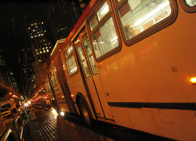

The number of miles traveled by vehicles in the United States fell by 3.6 percent in 2008, while the number of trips taken on public transportation increased by 4 percent, according to statistics gathered by the U.S. Department of Transportation (DOT) and the American Public Transportation Association (APTA).
The DOT estimated that U.S. residents traveled 2.922 trillion miles in 2008, down from 3.030 trillion miles in 2007 - a reduction of nearly 108 billion miles. Driving in the United States has been declining for 14 months, for a total vehicle travel reduction of 115 billion miles. The DOT found the greatest decrease was in rural driving, which was down 4.2 percent. Meanwhile, urban driving decreased by 3.2 percent.
At least part of the drop in urban driving can be explained by the 4 percent increase in the use of public transportation. U.S. residents took 10.7 billion trips on public transportation in 2008, according to APTA, reaching the highest level of national public transportation ridership in 52 years. Light rail transportation experienced the greatest increase, at 8.3 percent, in part because of relatively new and expanded service in places like Charlotte, N.C., and restored service in New Orleans. For other mass transit modes, commuter rail increased by 4.7 percent, subway ridership increased by 3.5 percent, bus ridership increased by 3.9 percent, and paratransit (on-demand transit services) increased by 5.9 percent.
|
 HELLOCHRIS/FLICKR Buses, subways and other modes of mass transit saw an increase in ridership in 2008. |
|
|